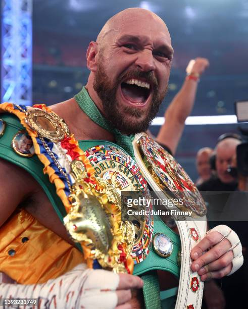
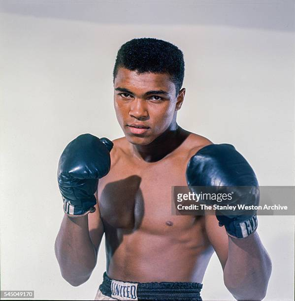

Tyson Fury, né le 12 août 1988 à Wythenshawe en Angleterre, est un boxeur britannique. Il a un palmarès de 34 combats, 33 victoires (dont 24 avant la limite) et 1 nul.

Muhammad Ali, né le 17 janvier 1942 à Louisville au Kentucky, est un boxeur américain. Il a un palmarès de 61 combats, 56 victoires (dont 37 avant la limite) et 5 défaites.
lien revenant à la page d'accueil : La Boxe